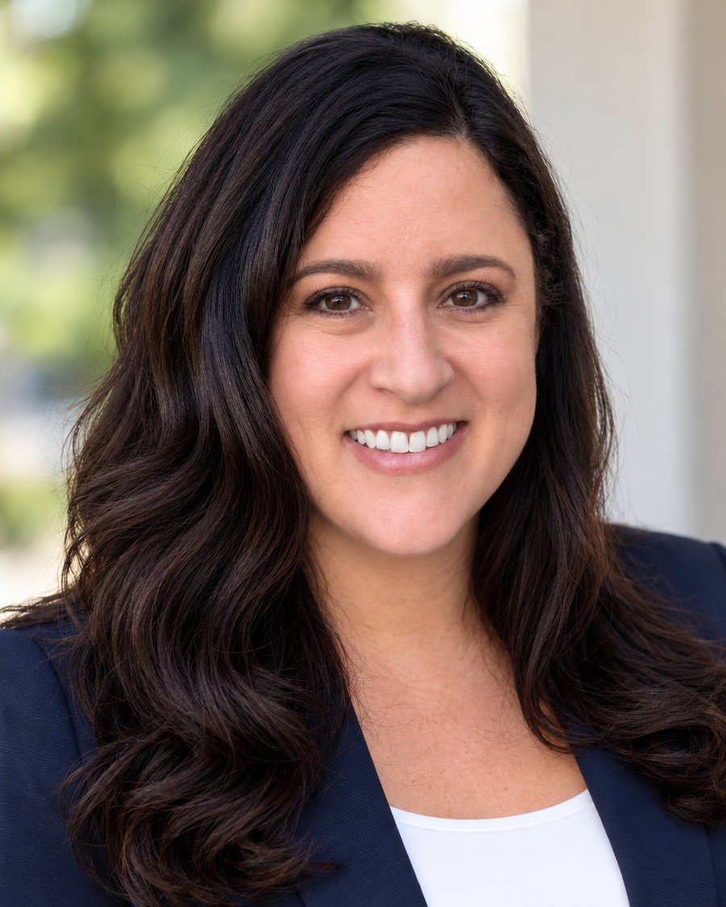

A neighbor, attorney, and mother bringing proactive, transparent leadership to City Hall - giving residents a real voice in decisions about growth, design, and infrastructure, and protecting the quality of life that makes Laguna Hills home.
Election: November 3, 2026 · View the District 4 map
Laguna Hills Civic Center photo by Beyond My Ken, CC BY-SA 4.0, via Wikimedia Commons

Tiffany Boccieri grew up in South Orange County and chose to raise her own family here - drawn to the safe neighborhoods, parks, and close-knit community that make Laguna Hills unique.
As a California-licensed attorney and mother, she knows that sound decisions require careful analysis, active listening, and accountability - whether reviewing a city budget, evaluating a development proposal, or analyzing a traffic study.
Tiffany believes every resident deserves a strong voice in the decisions that shape Laguna Hills' future, and she's running for District 4 to bring service, integrity, and accountability to the City Council.
Tiffany's priorities for City Council are focused on responsible growth, safe and reliable infrastructure, public safety, accountable District 4 representation, and careful stewardship of public funds.
Tiffany supports meeting Laguna Hills' housing obligations while protecting the qualities that make our neighborhoods a great place to live. She will carefully evaluate major development proposals for traffic, parking, infrastructure capacity, fiscal impact, neighborhood compatibility, and long-term benefit to the community - while supporting housing options that allow people at different stages of life to remain part of Laguna Hills.
Tiffany will prioritize the infrastructure residents rely on every day - roads, traffic signals, sidewalks, bike connections, parks, and public facilities. She supports data-driven improvements that make neighborhood streets and school routes safer, reduce unnecessary congestion, maintain our public spaces, and ensure that infrastructure investments are cost-effective, durable, and prepared for the future.
Keeping Laguna Hills safe starts with strong police, fire, emergency response, and crime prevention. Tiffany supports careful oversight of the City's partnerships with the Orange County Sheriff's Department and Orange County Fire Authority, along with effective coordination with county behavioral-health, outreach, school-safety, and other community resources when specialized services can help prevent a problem from becoming a public-safety crisis.
Laguna Hills' new by-district election system gives District 4 its own representative on the City Council. Tiffany lives in Stratford Ridge in District 4 and is committed to being accessible and accountable to the people she represents - bringing neighborhood concerns to City Hall while considering the citywide impact of every vote. That includes issues affecting neighborhoods around Paseo de Valencia, La Paz, Moulton and Alicia, school access and traffic around Valencia Elementary, and the businesses and public spaces that serve District 4. View the official District 4 map.
Tiffany's legal background means she reads the fine print. She will scrutinize city budgets, contracts, development agreements, and major spending proposals - asking about long-term costs, financial risks, and whether taxpayers are receiving clear value. She also believes residents should be able to understand major City Council decisions, and will work to explain important votes and financial issues in straightforward, plain language.
If you want to know where Tiffany stands on an issue, get in touch.
Email Tiffany